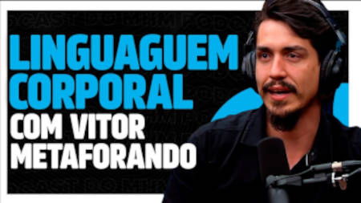

Paulo Jubilut
Prazer, meu nome é Paulo Jubilut, sou biólogo e você está no maior canal de BIOLOGIA do Brasil! Aqui eu me dedico a mostrar a ciência da vida de forma criativa e divertida, pra que você veja que a biologia vai muito além dos nomezinhos complicados da escola. Aqui você vai ver como a Biologia é um tesão!
Metaforando
O Maior Canal de Linguagem Corporal do Mundo. Meu nome é Vitor Santos, sou perito certificado em FACS pelo PEG-USA, único instituto no mundo, autorizado à certificação científica em Codificação Facial pelo sistema FACS. Aqui você encontra; Análises de Comportamento Não Verbal (LIE TO ME STYLE), Metáforas por todos os lados da cultura POP!
Hoje no mundo militar

Canal especializado em temas militares contemporâneos. Notícias relevantes e vídeos apresentando em detalhes as armas que compõem o arsenal moderno dos principais exércitos do mundo.
Curso em Video
Cursos em vídeo-aulas totalmente gratuitos, criados pelo Professor Gustavo Guanabara. Os seus cursos de tecnologia favoritos.